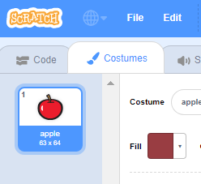
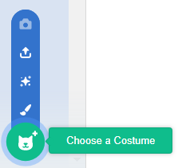
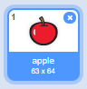

With your sprite selected, click on the Costumes tab

Click Choose a Costume and choose one of the five options From bottom to top they are:

If you wish to delete the imported costume, select it and click on the small cross in the top right hand corner.
